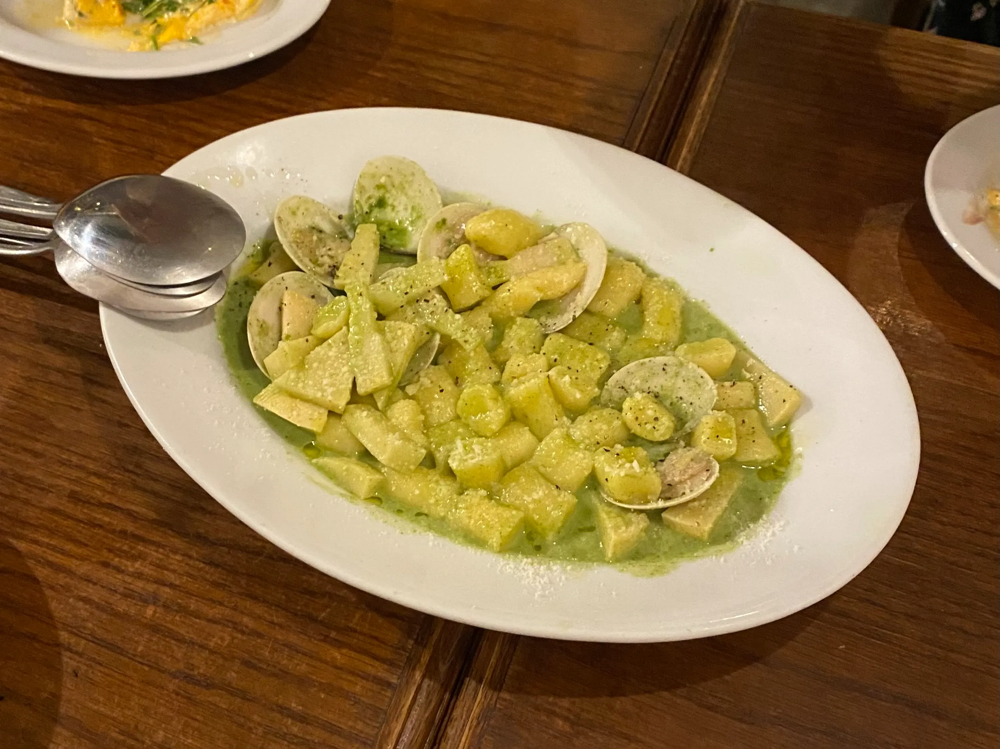
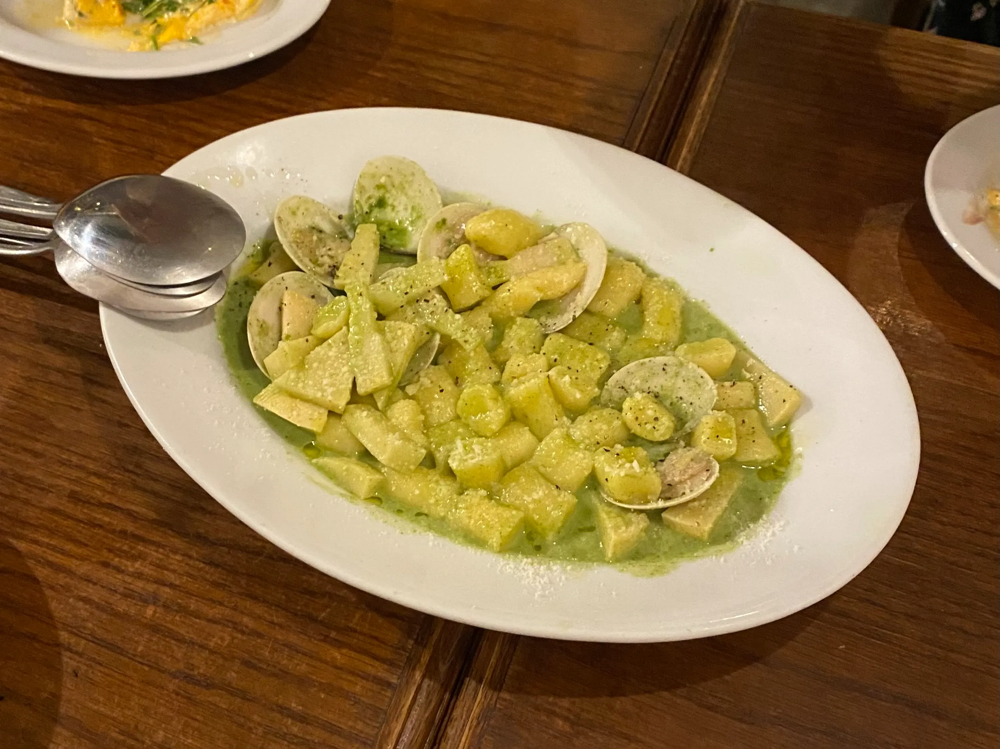
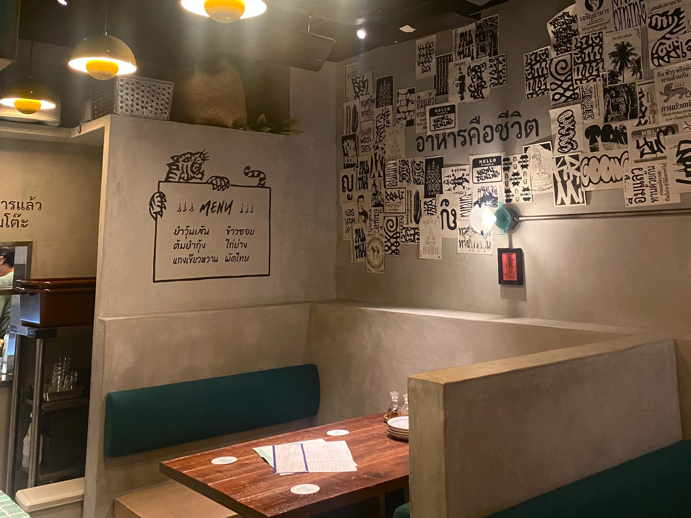
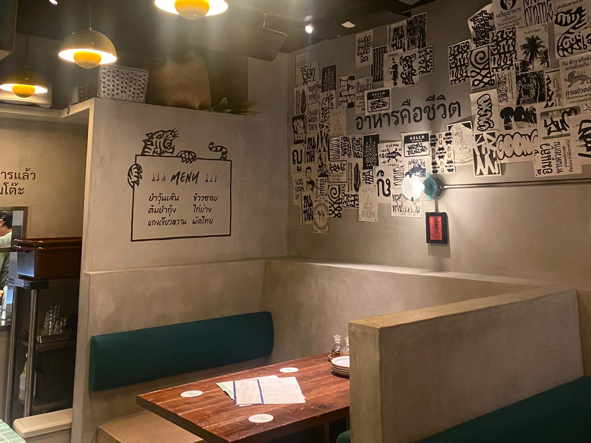
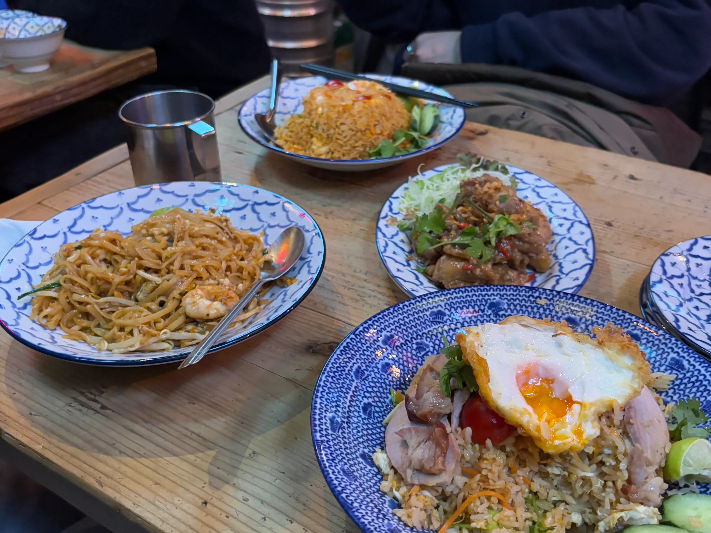
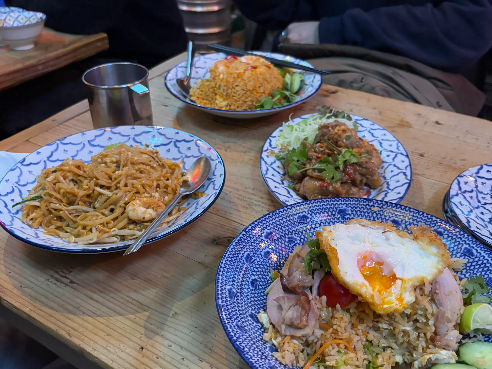

Lording...
東京近郊の美味しいご飯屋さんを厳選して紹介します。
各ジャンルのおすすめレストランをお楽しみください。
おしゃれな空間と絶品料理を堪能できるお店を探してみましょう！
↓


 

 



 



この中から厳選した3つのレストランについて詳しく紹介します!
初めてこのお店に訪れた際、美味しすぎて翌週も訪れてしまったぐらい大好きなお店です。ご飯ももちろん美味しいですが、私が一番好きなのはタロ芋ケーキです。タイではモーゲンと呼ばれていると店員さんが教えてくれました。目黒駅から歩いてすぐなので是非一度訪れてみてください。
バンバンは4人くらいで行くと1番コスパ良く食べられます。何度か訪れていますが、毎回必ず注文するのはトリュフリゾットです。またクリームブリュレもとても美味しいので是非頼んでみて欲しいです。神泉駅が近いですが、渋谷駅からも徒歩15分くらいで行けます。人気店なので予約してから行くのをおすすめします!
なかよしは東京を中心に11店舗展開しているので、比較的行きやすいと思います。私のおすすめは若鶏と茄子の柚子おろし煮定食ですが、どれもとても美味しいです。店舗によるのですが、お刺身が付けられるところがあります。本店は付けられたと思うので是非試してください。土鍋で炊いたご飯がおかわり自由なのも注目ポイントです!